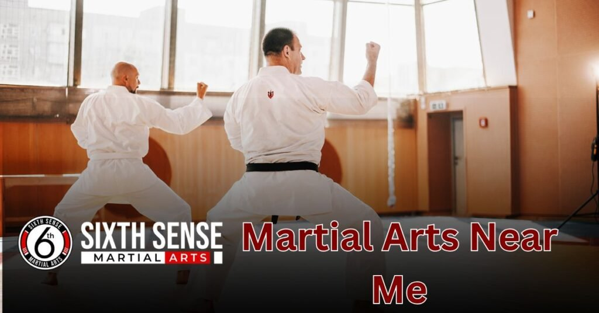
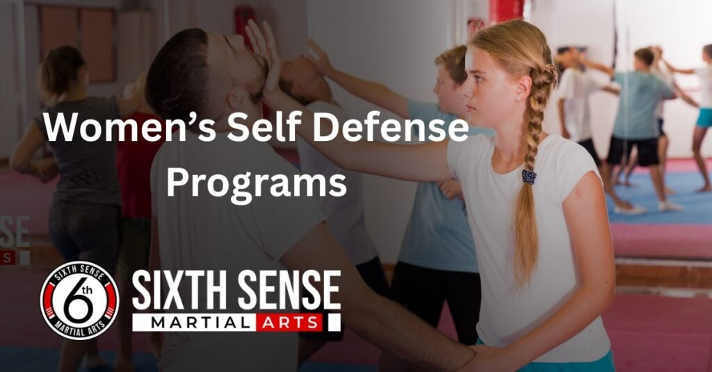
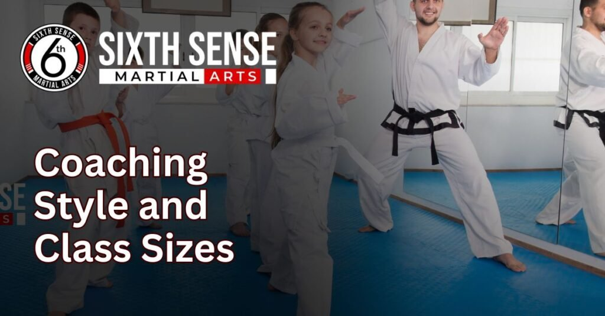

Martial arts near me with prices worth checking out

Martial arts near me becomes more than just a search when you find a place like SixthSense MMA. We make trying something new feel natural, especially for beginners. Whether you’re an adult getting into training or a parent exploring self-defense for kids or teens, our programs are designed to match your goals.
With certified coaches offering expert coaching, we guide you step by step in a supportive space where every experience matters. You’ll learn useful skills, build fitness, and grow with people just like you all while getting fit in a comfortable and fun environment.
What sets us apart is the strong support system, a clear breakdown of techniques, and the feeling that you’re not just doing martial arts — you’re becoming part of something rewarding. This is why people who try SixthSense tend to stick with it and truly thrive.
Looking for Martial Arts Near Me? SixthSense MMA Has You Covered
Martial arts near me means more than just location when you find a place like SixthSense. We’ve designed a friendly, supportive space where people of all backgrounds, whether beginners or advanced, can discover the power of martial training. This is the right place to stay active, build confidence, and sharpen both your mind and body at your own pace.
Whether you’re here to protect yourself, learn how to fight, or simply want to get fit, our programs are open to everyone. Students of all ages are welcome, and every session is designed to help you grow in a real, supportive environment.
From fighting techniques to personal goals, learning here is not just about combat it’s about finding the control within your arms and building the strength to try something new with confidence, right here in your local area.
What Is Martial Arts Training and Why It Matters
Martial arts training is a powerful way to build discipline, manage stress, and improve both your physical and mental well-being. It teaches self awareness, control, and respect while helping you develop real skills like proper kicks, punches, and movement balance.
Through consistent training, you learn how to stay calm under pressure, boost your endurance, and grow with purpose in your daily lifestyle. Each session acts as a reliever for tension and guides you toward a more healthy, focused life.
Whether your goal is to become a fighter or just feel stronger and more in control, this combination of movement and mindset helps everyday people live better with the right support, intention, and mindset.
Our Martial Arts Programs for All Ages and Skill Levels
Training in martial arts isn’t a one-size-fits-all journey it’s a structured, supportive path designed to meet you where you are, no matter your age, skill level, or background. At SixthSense, we offer a range of programs and classes for adults, teens, seniors, and even families, because self-defense, fitness, and real-world techniques are for all.
Whether you’re a beginner or more advanced, the learning experience here is built around the belief that your progress matters. These MMA-based systems aren’t just about fighting they help people grow, find purpose, and gain lasting confidence.
Our approach is step by step, with guidance that’s based in real training, to help you reach your goals in a place where you truly feel you belong.
Brazilian Jiu Jitsu (BJJ) Classes
Our BJJ classes at SixthSense MMA focus on mastering grips, positioning, and submissions through a structured breakdown of every technique. Taught by a certified coach, this martial art is built to help you learn how to stay in control, use leverage, and build discipline in a friendly, focused environment.
Whether you’re interested in compete level training or just want to get in shape, BJJ teaches true coordination, sharpens the mind, and strengthens the body. It’s a smart way to train with respect while developing precise movements that deliver real impact.
Muay Thai & Kickboxing Training
Using your fists, elbows, knees, and legs, you’ll develop powerful techniques to defend, burn calories, and fight at the right distance. This high-energy program is designed to get real results by focusing on control, technique, and strength, making each session a full body workout.
Led by skilled coaches, our striking program is a great way to learn how to fight with purpose while enjoying a strong, friendly environment that supports you from day one.
Mixed Martial Arts (MMA) Coaching
MMA at SixthSense MMA is a complete system that brings together boxing, BJJ, wrestling, and more for true full-body training. Our step-by-step coaching helps each student master essential moves, improve endurance, and embrace the challenge of modern martial arts.
Whether you’re interested in competition or just want to grow in your own practice, every training session is designed to show steady progress and unlock your full potential. With hands-on guidance from experienced coaches, you’ll develop serious technique, functional strength, and the mindset needed to advance with purpose.
Women’s Self-Defense Programs
At SixthSense MMA, our women’s self-defense sessions focus on real-life techniques that help build confidence, strength, and mental strength in a supportive, welcoming environment. With coaching that teaches you how to escape holds, apply practical techniques, and stay prepared, each session helps you recognize your boundaries and use your voice when it truly matters.
These classes are about more than just fitness they’re about learning how to be in control and developing skills you can rely on. The support here is unmatched, and the goal is always to help you grow stronger, safer, and more secure in every way.

What to Expect When You Join SixthSense MMA
Joining SixthSense is a smooth process one where you feel welcome from the very first moment. Whether your goal is fitness, self-defense, or simply trying something new, we’re here to help you learn at your own pace, without pressure.
You’ll walk in and be greeted by a friendly team that makes sure you feel comfortable, respected, and never overwhelmed. We do everything to make the steps clear and easy to follow, whether you’ve tried martial training before or this is your first day.
You’ll enjoy how our training is structured, and know that your long-term growth is part of our shared motivation. At SixthSense, you’re not just another face you’re treated as part of something real, with support every step of the way.
Your First Class Experience
Your journey at SixthSense MMA starts the moment you walk into our friendly, low-pressure environment, where a coach or team member will greet you, give you a quick tour, and explain how the class will work. If you’re nervous, don’t worry everyone started somewhere.
Our instructors are here to help, guide, and make you feel at ease from the warm-up to your first basic training techniques. Whether you’re a total beginner or just trying something new, we focus on creating a space where learning is simple, realistic, and good for you so you can get comfortable just being in the class without pressure to perform.
Equipment and Dress Code
To start, all you need is a t-shirt, athletic pants, or shorts comfortable clothes that let you move easily. If you’re trying muay thai, MMA, or Brazilian jiu jitsu, don’t worry about having gear yet we’ll lend you gloves, shin guards, or a uniform as needed, depending on the program.
We also guide you on what’s best to wear, whether it’s wraps for your hands or a gym guard for sparring. As you progress, you’ll know what gear to choose, and we’re here to help at every step so you don’t feel stuck going forward. Everything is based on what you need, and we’ll make sure it’s free of stress, especially during your first sessions.
Training Schedule and Progression
We offer a flexible training schedule that fits real life with classes in the evening, on weekends, and after school, so you can find what works best for your time. Whether you’re coming as a kid, teen, or adult, we keep your pace in mind and focus on step-by-step progression.
You’ll start with basic techniques and gradually move toward more advanced sessions, including sparring, belt testing, and personalized feedback to help you go further. Our support system is strong, and we track your development throughout so you’re always moving forward with confidence.
Why Choose SixthSense MMA for Your Martial Arts Near Me Journey
ixthSense MMA isn’t just a martial arts gym it’s a supportive, no-pressure environment where every student is treated with attention, care, and trust. Whether you’re looking to get fit, build confidence, improve your technique, or compete, this is the right location to start your journey. We guide you step by step, with training that’s personal, real, and based on your actual goals, not some generic list.
Here, discipline builds, progress grows, and the experience feels meaningful because we understand how much it matters to be part of something different.
You’re not just another name on a roster; you’re part of a team that works together to help everyone train, grow, and shape a stronger version of themselves through quality martial arts. We’re here to show you how it all starts, and what it truly means to train in a place that offers more than just classes .
Experienced Certified Coaches
Our certified coaches are more than just skilled they’re trained, passionate, and focused on your long-term improvement. With years of personal experience in Brazilian Jiu Jitsu, Muay Thai, and MMA, they break down techniques in a clear, simple way, giving you constant feedback and real support.
We believe in building trust with every student by showing how to move with purpose, not ego. It’s never about pressure it’s about helping you grow, feel confident, and know that they truly care about your journey.
Flexible Memberships and Trial Classes
We offer trial classes and flexible plans that fit your lifestyle, budget, and schedule so you can start training with no commitment and zero pressure. Whether you want to train once a week or more, our memberships are designed to work for you.
You’ll get a feel for the gym before making any decisions, and if it’s the right place, you can join without hidden fees or long-term contracts. It’s a good way to know how we support our students every day.
Clean, Friendly, and Supportive Environment
From the moment you walk in, you’ll feel the difference our well-maintained, clean facility is organized, welcoming, and free of judgment. No ego, no sidelines just people helping each other grow in a safe, respectful, and open atmosphere.
Whether you’re a beginner or advanced, you’re supported every step of the way. It’s not just a gym it’s a space built for you, where everyone is respected, and coaches actually notice what you’re doing and how they can help.
Pricing and Membership Options
We keep pricing clear, honest, and based on your needs no hidden costs, confusing contracts, or pressure to sign up. Whether you’re new, training regularly, or just want to try it out, our membership options are made to match your goals.
With monthly, quarterly, and even weekly plans, we make sure your experience feels real, not rushed. That’s why many of our students say they chose SixthSense because we’re upfront about everything that matters.
Coaching Style and Class Sizes
Our coaching is personalized, patient, and focused on helping you understand the techniques that match your level whether you’re just starting or ready to compete. With small class sizes, you get the attention and respect you deserve.

We don’t just run you through drills we coach you on how to apply real movement and self-defense in martial arts. You won’t be left on the sidelines; we make sure every student feels included and treated with care.
Facility and Location Advantages
Our facility is clean, well-maintained, and located near MacArthur Blvd in Coppell, TX 75019, making it easy to find and convenient to reach. With plenty of parking, a welcoming layout, and quality mats and gear, training here is truly a low-stress experience.
The environment is supportive and built to make you feel comfortable and safe whether you’re coming from nearby, in the city, or just looking for a gym that actually supports your goals.
Customer Reviews:
Jason R.
“I joined to lose weight. Now I can do a roundhouse kick… to grab snacks off the top shelf. Progress!”
Emily S.
“Came for the free trial, stayed for the sweat, laughs, and accidentally kicking my stress goodbye.”
Daniel W.
“Each session feels like a workout and a comedy show. Coach jokes hit harder than his mitts.”
Olivia H.
“I wanted to learn self-defense. Now I accidentally bow before entering my kitchen. Love it here.”
Rachel K.
“I haven’t felt this strong since I opened that stubborn pickle jar last week. SixthSense changed me!”
Chris L.
“Joined with my buddy as a joke. What have we become?”
Sophia M.
“This gym turned me from ‘Netflix and snacks’ to ‘armbars and meal prep.’ Who even am I?”
Contact Us
You can find SixthSense MMA at 817 S MacArthur Blvd #100, Coppell, TX 75019, United States. Our facility is located in a clean, easy-to-reach area with plenty of free parking, making it convenient whether you’re coming from Coppell or a nearby city. You can also learn more by visiting our website at sixthsensemma.com.
Conclusion
Martial arts near me isn’t just a search it’s the first step toward something better. At SixthSense MMA, we make that next step easy. From flexible schedules and trial classes to experienced coaching and real community support, everything is built to help you succeed.
If you’re ready to train in a clean, friendly, and motivating environment, we’re here for you. Book your free trial class today, meet our team, and discover what real martial arts training can do for your body, mind, and confidence.
FAQ's
We offer Brazilian Jiu Jitsu (BJJ), Muay Thai, Kickboxing, Mixed Martial Arts (MMA), and Women’s Self-Defense classes. Each program is designed for different goals—whether you want to compete, get fit, learn self-defense, or build confidence.
No experience is required. Our beginner-friendly approach ensures you learn the basics step by step, with supportive coaching and no pressure to perform. Everyone starts at their own pace.
Yes. We provide age-appropriate programs for kids, teens, and adults, making martial arts training accessible for the whole family. Classes focus on discipline, fitness, and self-defense skills in a fun, safe environment.
Yes, we offer free trial classes so you can experience the training, meet our coaches, and see if our gym is the right fit—no pressure or long-term commitment required.
We focus on an ego-free, welcoming environment with certified coaches, clean facilities, and structured programs for all skill levels. Our goal is to help you train with purpose, progress steadily, and feel supported.
Train with us in Coppell
The first class is free. Shorts, a t-shirt and a water bottle. We lend the rest.
Book a free class